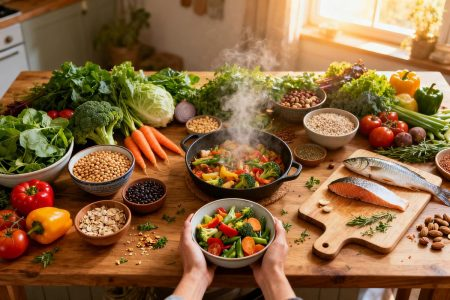

Santé & Alimentation
Ces choix alimentaires qui réduisent significativement les risques de cancer
Une nouvelle étude met en lumière l'impact direct de notre régime alimentaire sur la prévention du cancer. Découvrez quels aliments privilégier au quotidien.
Lire l'article